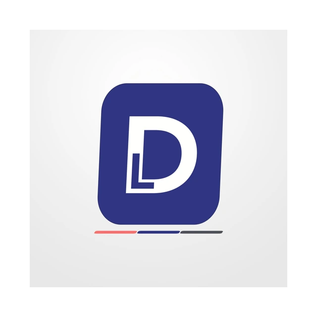

Turn scattered ideas into clear, campaign-ready visuals.
DesignLab creates social media campaigns, brand materials, publication layouts, and lightweight web systems for businesses, institutions, and independent brands.
Design systems that work.

Each project is built to be presentable, usable, and brand-consistent.
DesignLab can support one-off requests, recurring content, and practical digital builds.
You work directly with the creator behind the output — no scattered handoff, no bloated process.
What DesignLab builds
Services shaped for real campaign and content work
Design Packages
Recurring content support for consistent posting, promotions, and campaign rollouts.
02Individual Services
One-off posters, brochures, layouts, social media assets, and brand-ready content.
03Website / System Packages
Static websites, portfolio pages, inquiry systems, dashboards, and trackers.
Selected direction
Work across business, university, and digital project spaces
Enrollment ads, event visuals, publication materials, and institutional campaign design.
Browse university work ↗E-commerce storefronts, product campaigns, carousel posters, and branded social media content.
Browse client work ↗Internal forms, dashboards, trackers, and portfolio tools that keep work more organized.
Browse web systems ↗Studio notes
A better look at the work behind the work

Grinding Daily: What Happens Behind the Work
A short note about the current rhythm of DesignLab — from live client work and portfolio cleanup to systems, captions, revisions, and ongoing studio building.
Read note ↗Behind the studio
DesignLab is created and directed by Jann Jaravata.
Graphic designer, creative developer, and social media manager building a creative practice that blends communication design, campaign execution, and lightweight digital tools.
Active pages
Current managed pages
Ready to build?